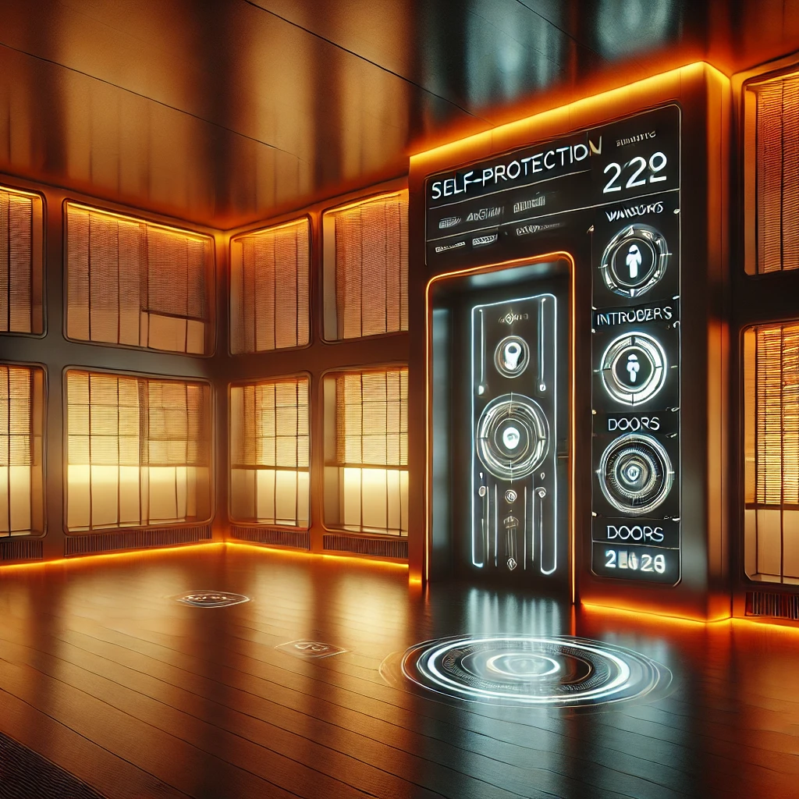

Ever wanted a house that knows you better than you know yourself? The Brain is your personal assistant, memory keeper, and life organizer all wrapped in one. It tracks routines, stores your preferences, and handles business without breaking a sweat. Whether it's locking doors, adjusting shades, or reminding you about tomorrow’s meeting, this Brain’s got your back.

With built-in self-protection, your house becomes a fortress. It locks doors, shutters windows, and controls shades at the first sign of danger. Whether it's unwanted guests or animals, this system’s got defenses tighter than Fort Knox.